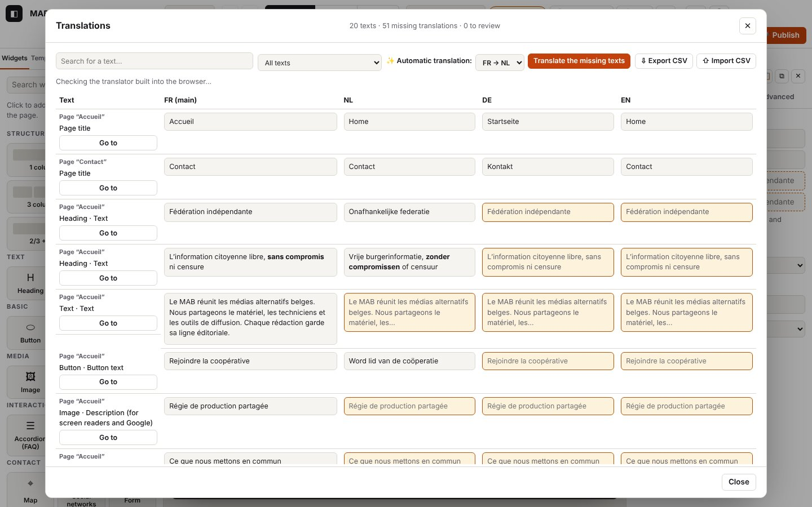

5. Languages and translations

On this page
The log extracts below were captured in French; codes and levels are identical in every language (the messages in your log are in the interface language).
An Atelier site can exist in several languages (French, Dutch, German, English, Japanese). You write in the main language, then you translate: by hand in the translations table, automatically on your computer (the translator built into Chrome; nothing is sent to a server), or by giving a CSV file to a translator.
Log domains: i18n.* (translations table: opening, filters, typing, review, CSV), translate.* (on-device translation: translator status per language pair, model download, translation of a batch, failures), settings.lang-* (site languages, Site panel).
5.1 Choose the site languages
Goal: add or remove a language, and change the language displayed in the editor.
Steps
- Left-hand panel, “Site” tab: tick or untick a language (the main language cannot be unticked).
- At the top, the language menu changes the language displayed in the canvas (you then edit that language).
What you see: the language appears in the top menu and as a column in the translations table; its texts are “to translate”. A removed language disappears from the published site, but its translations stay in the project (ticking it again brings them back).
Expected log (journaux/langues-site.log, canvas.* lines left out)
Technical details: expected log
21:49:07.943 +9.66s INFO settings.lang-remove Langue retirée : English (ses traductions restent dans le projet) {"lang":"en","languages":["fr","nl","de"],"main":"fr"}
21:49:07.944 +9.66s DEBUG store.view Vue :
…
21:49:08.298 +10.02s DEBUG store.view Vue : lang=nl {"lang":"nl"}
…
21:49:08.636 +10.36s DEBUG store.view Vue : lang=fr {"lang":"fr"}
…
21:49:08.893 +10.61s INFO settings.lang-add Langue ajoutée : English (textes à traduire) {"lang":"en","languages":["fr","nl","de","en"],"main":"fr"}
21:49:08.893 +10.61s DEBUG store.view Vue : To check: settings.lang-remove then settings.lang-add with the updated languages list; store.view with lang=nl when you change the displayed language.
Variants
| Situation | What changes | Log |
|---|---|---|
| Changing the displayed language | the canvas reloads in that language | store.view {"lang":"nl"} then canvas.load.* (chapter 2) |
Errors
| Situation | Message shown | Log | What to do |
|---|---|---|---|
| Unticking the main language | not possible (box greyed out) | nothing | change the main language first |
5.2 Open the translations table, filter, search, type
Goal: see all the site's texts, one column per language, and fill in what is missing.
Steps
- Top bar: “🌐 Translations” (or Ctrl+K “translations table”).
- Filter: “All texts”, “To translate only” or “Automatic translations to review”. “Search for a text…” field.
- Click in a cell and type the translation; it is saved when you leave the cell.
- “Go to” closes the table and shows the text in the page.
What you see: at the top, “24 texts · 59 missing translations · 6 to review”; the missing cells are tinted.
Expected log (journaux/langues-tableau.log)
Technical details: expected log
21:49:05.076 +6.80s INFO i18n.open Tableau des traductions : 23 textes, 56 traduction(s) manquante(s), 6 à relire {"languages":["fr","nl","de","en"],"main":"fr","filter":"all","visible":23,"shown":23,"missing":56,"review":6,"mtLang":"nl"}
21:49:05.077 +6.80s WARN translate.absent Pas d’API Translator dans ce navigateur (Chrome 138+ sur ordinateur) : export CSV proposé {"from":"fr","to":"nl","ua":"HeadlessChrome 141, Not?A_Brand 8, Chromium 141"}
21:49:05.112 +6.83s DEBUG i18n.filter Filtre : missing (20 textes) {"filter":"missing","visible":20,"shown":20,"missing":56,"review":6}
…
21:49:05.292 +7.01s DEBUG i18n.filter Filtre : all (23 textes) {"filter":"all","visible":23,"shown":23,"missing":56,"review":6}
…
21:49:05.507 +7.23s DEBUG i18n.edit Traduction saisie (de) {"key":"n:p_mmlk9wyr:n_5y4p1n6860:text","lang":"de","len":23}To check: i18n.open gives the number of visible texts (visible), missing translations (missing) and texts to review (review), and the target language of the automatic translation (mtLang). Just after, a translate.* line says whether Chrome's translator is available (here translate.absent: the test browser does not have the API). i18n.filter gives the filter and the number of lines; i18n.edit the text's key, the language and the length typed.
Variants
| Situation | What changes | Log |
|---|---|---|
| Search | the list shrinks with each letter | i18n.search (TRACE: only visible with ?trace) {"len":4,"visible":1} |
| More than 300 texts | “Show more” button | i18n.more (DEBUG) {"shown":600,"visible":812} |
| “Go to” | the table closes, the text is selected in the page | i18n.go (DEBUG) with key and lang, then store.select |
| Cell emptied | the translation is removed (the main language is shown instead) | i18n.edit with "empty":true |
Errors
| Situation | Message shown | Log | What to do |
|---|---|---|---|
| Text refused (language not in the site, key gone while typing) | red error message | i18n.edit-fail (WARN) with key, lang and the error | close and reopen the table; if it keeps happening, send the log |
5.3 Translate automatically on the device
Goal: fill in all the missing translations of a language in one go, without sending the texts to an online service.
Steps
- In the table, “✨ Automatic translation”: choose the pair (e.g. “FR → EN”).
- The message under the bar says whether the translator is ready or will be downloaded.
- “Translate the missing texts”; “Stop” interrupts at any time.
What you see: “Translating into English: 12 / 21…”, then “Finished: 21 texts translated. Review them: they are marked “to review”.” The filter switches to “to review”.
Expected log — Chrome's translator, model to download (journaux/langues-translator-chrome.log)
Technical details: expected log
21:49:07.095 +8.81s INFO translate.status Traducteur fr → nl : downloadable (modèle à télécharger au premier clic) {"from":"fr","to":"nl","state":"downloadable","ms":0,"source":"chrome"}
21:49:07.113 +8.83s INFO translate.status Traducteur fr → de : downloadable (modèle à télécharger au premier clic) {"from":"fr","to":"de","state":"downloadable","ms":0,"source":"chrome"}
21:49:07.169 +8.89s INFO translate.batch.start [translate.batch#4] Traduction automatique fr → de {"from":"fr","to":"de"}
21:49:07.170 +8.89s INFO translate.model.start [translate.model#2] Préparation du traducteur fr → de {"from":"fr","to":"de"}
21:49:07.181 +8.90s DEBUG translate.model.download [translate.model#2 · 11 ms] Téléchargement du modèle fr → de : 30 % {"pct":30}
21:49:07.186 +8.91s DEBUG translate.model.download [translate.model#2 · 16 ms] Téléchargement du modèle fr → de : 60 % {"pct":60}
21:49:07.192 +8.91s DEBUG translate.model.download [translate.model#2 · 22 ms] Téléchargement du modèle fr → de : 100 % {"pct":100}
21:49:07.197 +8.92s INFO translate.model.ok [translate.model#2 · 27 ms] Traducteur fr → de prêt {"downloaded":true}
21:49:07.198 +8.92s DEBUG translate.batch.ready [translate.batch#4 · 29 ms] Traducteur prêt : traduction des textes manquants
21:49:07.199 +8.92s DEBUG translate.batch.progress [translate.batch#4 · 30 ms] 1 / 5 textes {"done":1,"total":5,"count":1,"errors":0}
21:49:07.200 +8.92s DEBUG translate.batch.progress [translate.batch#4 · 31 ms] 2 / 5 textes {"done":2,"total":5,"count":2,"errors":0}
21:49:07.200 +8.92s DEBUG translate.batch.progress [translate.batch#4 · 31 ms] 3 / 5 textes {"done":3,"total":5,"count":3,"errors":0}
21:49:07.200 +8.92s DEBUG translate.batch.progress [translate.batch#4 · 31 ms] 4 / 5 textes {"done":4,"total":5,"count":4,"errors":0}
21:49:07.201 +8.92s DEBUG translate.batch.progress [translate.batch#4 · 32 ms] 5 / 5 textes {"done":5,"total":5,"count":5,"errors":0}
…
21:49:07.209 +8.93s INFO translate.batch.ok [translate.batch#4 · 40 ms] 5 texte(s) traduit(s) fr → de, marqués « à relire » {"count":5,"errors":0,"total":5}
21:49:07.256 +8.98s INFO translate.status Traducteur fr → nl : downloadable (modèle à télécharger au premier clic) {"from":"fr","to":"nl","state":"downloadable","ms":0,"source":"chrome"}
21:49:07.307 +9.03s INFO translate.batch.start [translate.batch#5] Traduction automatique fr → nl {"from":"fr","to":"nl"}
…
21:49:07.308 +9.03s DEBUG translate.batch.ready [translate.batch#5 · 1 ms] Traducteur prêt : traduction des textes manquants
21:49:07.309 +9.03s DEBUG translate.batch.progress [translate.batch#5 · 2 ms] 1 / 10 textes {"done":1,"total":10,"count":1,"errors":0}
21:49:07.311 +9.03s DEBUG translate.batch.progress [translate.batch#5 · 4 ms] 3 / 10 textes {"done":3,"total":10,"count":3,"errors":0}
21:49:07.313 +9.03s DEBUG translate.batch.progress [translate.batch#5 · 6 ms] 5 / 10 textes {"done":5,"total":10,"count":5,"errors":0}
21:49:07.315 +9.04s DEBUG translate.batch.progress [translate.batch#5 · 8 ms] 8 / 10 textes {"done":8,"total":10,"count":8,"errors":0}
21:49:07.317 +9.04s DEBUG translate.batch.progress [translate.batch#5 · 10 ms] 10 / 10 textes {"done":10,"total":10,"count":10,"errors":0}
…
21:49:07.330 +9.05s INFO translate.batch.ok [translate.batch#5 · 23 ms] 10 texte(s) traduit(s) fr → nl, marqués « à relire » {"count":10,"errors":0,"total":10}To check: translate.status gives the status per pair (available, downloadable, downloading); the translate.batch run contains the translate.model run (creation of the translator, with the download progress translate.model.download), then translate.batch.progress roughly every quarter, and translate.batch.ok with count, errors, total and the total duration in square brackets. Each translated text also writes translate.text (TRACE: lengths and duration), visible with ?trace.
Variants
| Situation | What changes | Log |
|---|---|---|
| Test translator (automated tests) | “Test translator” | translate.status {"source":"test"}, translate.create (DEBUG) instead of translate.model.* (journaux/langues-traduction-auto.log) |
| Same pair a second time | no download | translate.reuse (DEBUG) “déjà prêt” (already ready) instead of translate.model.* |
| Everything is already translated | “Finished: 0 texts translated” | translate.batch.ok {"count":0,"total":0} |
| You click “Stop” | “Interrupted: 7 texts translated”; those are kept | translate.batch.cancel (INFO) {"count":7,"total":17} (journaux/langues-traduction-arret.log) |
| Single-language site | “This site has only one language.” | translate.single-lang (DEBUG) |
“Stop” extract:
Technical details: expected log
21:49:06.719 +8.44s INFO translate.batch.start [translate.batch#3] Traduction automatique fr → nl {"from":"fr","to":"nl"}
…
21:49:06.761 +8.48s DEBUG translate.batch.progress [translate.batch#3 · 42 ms] 1 / 16 textes {"done":1,"total":16,"count":1,"errors":0}
21:49:06.884 +8.60s DEBUG translate.batch.progress [translate.batch#3 · 165 ms] 4 / 16 textes {"done":4,"total":16,"count":4,"errors":0}
…
21:49:06.987 +8.71s INFO translate.batch.cancel [translate.batch#3 · 268 ms] Arrêté par la personne : 6 / 16 textes traduits {"count":6,"errors":0,"total":16}Errors
| Situation | Message shown | Log | What to do |
|---|---|---|---|
| Browser without the Translator API (Firefox, Safari, Chrome < 138, mobile) | “On-device automatic translation needs Chrome 138… You can also export the table to CSV”; button greyed out | translate.absent (WARN) with the browser (ua) | a recent Chrome on a computer, or CSV export (5.5) |
| Pair not offered by Chrome | “Chrome does not offer FR → EN translation on this device.” | translate.unavailable (WARN) | another pair, or CSV |
| Chrome does not respond within 4 s | “Chrome does not respond for automatic translation…” | translate.timeout (WARN) | restart Chrome; look at chrome://on-device-internals |
availability() throws an error | “Automatic translation unavailable: …” | translate.status-fail (WARN) with error.name | send the log |
| Download refused (gesture required) | “Automatic translation failed: Requires a user gesture…” | translate.model.fail (ERROR) with hint “Chrome exige un clic…” (Chrome requires a click), then translate.batch.fail (ERROR) | click the button again (the download must start from a click) |
| Some texts fail | “Finished: 15 texts translated, 5 failures” | translate.text-fail (WARN) for each one (length, error), translate.batch.errors (WARN), then translate.batch.ok with errors | start again: only the missing ones are taken up |
“Chrome translator errors” extract (journaux/langues-translator-erreurs.log):
Technical details: expected log
21:49:07.417 +9.14s WARN translate.unavailable Chrome ne propose pas fr → en sur cet appareil {"from":"fr","to":"en","state":"unavailable","ms":0}
…
21:49:07.484 +9.20s INFO translate.batch.start [translate.batch#6] Traduction automatique fr → en {"from":"fr","to":"en"}
21:49:07.484 +9.20s INFO translate.model.start [translate.model#3] Préparation du traducteur fr → en {"from":"fr","to":"en"}
21:49:07.484 +9.20s ERROR translate.model.fail [translate.model#3 · 0 ms] Traducteur fr → en impossible : NotAllowedError — Requires a user gesture when availability is "downloadable". {"from":"fr","to":"en","hint":"Chrome exige un clic de la personne pour télécharger le modèle de traduction (geste…
21:49:07.486 +9.21s ERROR translate.batch.fail [translate.batch#6 · 2 ms] Traduction automatique impossible : Requires a user gesture when availability is "downloadable". {"from":"fr","to":"en","error":{"name":"NotAllowedError","message":"Requires a user gesture when availability is \"downloadable\…
21:49:07.506 +9.23s WARN translate.status-fail Translator.availability(fr → nl) a échoué : OperationError — Service indisponible (simulé) {"from":"fr","to":"nl","ms":0,"error":{"name":"OperationError","message":"Service indisponible (simulé)","code":0}}“Partial failures” extract (journaux/langues-traduction-echecs.log):
Technical details: expected log
21:49:06.451 +8.17s INFO translate.batch.start [translate.batch#2] Traduction automatique fr → de {"from":"fr","to":"de"}
…
21:49:06.454 +8.17s WARN translate.text-fail Traduction fr → de d’un texte impossible : UnknownError — Unable to translate (simulé) {"from":"fr","to":"de","inLen":23,"ms":0,"error":{"name":"UnknownError","message":"Unable to translate (simulé)","code":0}}
…
21:49:06.456 +8.18s WARN translate.text-fail Traduction fr → de d’un texte impossible : UnknownError — Unable to translate (simulé) {"from":"fr","to":"de","inLen":11,"ms":0,"error":{"name":"UnknownError","message":"Unable to translate (simulé)","code":0}}
…
21:49:06.459 +8.18s WARN translate.text-fail Traduction fr → de d’un texte impossible : UnknownError — Unable to translate (simulé) {"from":"fr","to":"de","inLen":15,"ms":0,"error":{"name":"UnknownError","message":"Unable to translate (simulé)","code":0}}
…
21:49:06.460 +8.18s WARN translate.text-fail Traduction fr → de d’un texte impossible : UnknownError — Unable to translate (simulé) {"from":"fr","to":"de","inLen":17,"ms":0,"error":{"name":"UnknownError","message":"Unable to translate (simulé)","code":0}}
21:49:06.461 +8.18s WARN translate.text-fail Traduction fr → de d’un texte impossible : UnknownError — Unable to translate (simulé) {"from":"fr","to":"de","inLen":1,"ms":0,"error":{"name":"UnknownError","message":"Unable to translate (simulé)","code":0}}
…
21:49:06.470 +8.19s WARN translate.batch.errors [translate.batch#2 · 19 ms] 5 texte(s) non traduit(s) (voir translate.text-fail) {"errors":5,"total":19}
21:49:06.470 +8.19s INFO translate.batch.ok [translate.batch#2 · 19 ms] 14 texte(s) traduit(s) fr → de, marqués « à relire » {"count":14,"errors":5,"total":19}5.4 Review automatic translations
Goal: approve what the machine (translator or on-device AI) has written.
Steps
- “Automatic translations to review” filter.
- Correct the cell if needed, then “✓ Approve”. Correcting the text directly in the page also approves it.
What you see: the “Automatic translation to review” label disappears; the “to review” counter goes down. The check before export (chapter 8) reminds you of what is still to be reviewed.
Expected log (journaux/langues-traduction-auto.log)
Technical details: expected log
21:49:06.069 +7.79s DEBUG i18n.review-ok Traduction automatique validée {"key":"p:p_mmlk9wyr:seo","lang":"fr"}i18n.review-ok (DEBUG) gives the key and the language approved, followed by store.commit.
5.5 Export and import a CSV for a translator
Goal: have the site translated by a person, in a spreadsheet.
Steps
- “⇩ Export CSV”: a file
<site>-traductions.csv(UTF-8, one column per language, akeycolumn not to be touched). - The translator fills in the columns and saves as CSV (comma or semicolon).
- “⇧ Import CSV”: the changed texts are updated.
What you see: “Import finished: 1 text updated, 1 row skipped (text deleted or unknown).”
Expected log (journaux/langues-csv.log)
Technical details: expected log
21:49:07.650 +9.37s INFO i18n.csv-export Tableau exporté en CSV : 22 ligne(s) {"rows":22,"languages":["fr","nl","de","en"],"size":5285}
…
21:49:07.690 +9.41s INFO i18n.csv-import.start [i18n.csv-import#1] Import CSV : traductions.csv {"name":"traductions.csv","size":5726,"type":"text/csv"}
21:49:07.700 +9.42s DEBUG i18n.csv-import.parsed [i18n.csv-import#1 · 10 ms] 23 ligne(s) lues {"rows":23,"columns":["key","type","fr","nl","de","en","ja"]}
21:49:07.702 +9.42s WARN i18n.csv-import.unknown-rows [i18n.csv-import#1 · 12 ms] 1 ligne(s) ignorée(s) : clé inconnue (texte supprimé depuis l’export ?) {"unknown":1,"keys":["n:inconnue:zz:text"]}
21:49:07.703 +9.42s WARN i18n.csv-import.unknown-columns [i18n.csv-import#1 · 13 ms] Colonne(s) ignorée(s) : ja (langue absente du site) {"columns":["ja"]}
…
21:49:07.713 +9.43s INFO i18n.csv-import.ok [i18n.csv-import#1 · 23 ms] Import terminé : 1 texte(s) mis à jour, 1 ligne(s) ignorée(s) {"changed":1,"unknown":1}To check: i18n.csv-export (number of rows, languages); the i18n.csv-import run: parsed (rows and columns read), then ok with changed (texts changed) and unknown (rows refused).
Variants
| Situation | What changes | Log |
|---|---|---|
| Rows whose key no longer exists (text deleted since the export) | skipped, counted in the message | i18n.csv-import.unknown-rows (WARN) with the first 5 keys |
Column for a language that is not in the site (e.g. ja) | column skipped | i18n.csv-import.unknown-columns (WARN) |
| Nothing has changed | “Import finished: 0 texts updated” | i18n.csv-import.ok {"changed":0} |
Errors
| Situation | Message shown | Log | What to do |
|---|---|---|---|
File without a key column (not an Atelier export) | “CSV file not recognised: the key column is missing…” | i18n.csv-import.fail (ERROR) with the file name | start again from an Atelier export; keep the key column |
Technical details: expected log
21:49:07.768 +9.49s INFO i18n.csv-import.start [i18n.csv-import#2] Import CSV : mauvais.csv {"name":"mauvais.csv","size":24,"type":"text/csv"}
21:49:07.771 +9.49s DEBUG i18n.csv-import.parsed [i18n.csv-import#2 · 3 ms] 1 ligne(s) lues {"rows":1,"columns":["nom","prénom"]}
21:49:07.771 +9.49s ERROR i18n.csv-import.fail [i18n.csv-import#2 · 3 ms] Import CSV refusé : Fichier CSV non reconnu : la colonne key est absente (exportez d’abord depuis Atelier). {"name":"mauvais.csv","error":{"name":"Error","message":"Fichier CSV non reconnu : la colonne key est absente (export…5.6 A site in Japanese
Goal: publish a Japanese version (or a site entirely in Japanese) with no French text and no broken address.
Steps
- “Site” panel: tick “日本語”. For a Japanese-first site, choose 日本語 as the main language when you create the site (File → New empty site, see 1.5). A
.jsonproject whose main language is Japanese also keeps this setting when you open it (File → Open a project (.json)). - Translate as for the other languages (table, CSV or automatic translation; the fr → ja pair is offered by Chrome's translator when it knows it).
- For the address of a page in Japanese, click “Suggest from the translated title” (Pages) or type it: it is converted automatically.
Addresses (URLs) of pages in Japanese: addresses stay in Latin letters, digits and hyphens (a-z, 0-9, -). This is the safest choice for OVH hosting: no UTF-8 folder name damaged by the .zip archive, the FTP transfer or publish.php, and no unreadable address encoded as %E3%83%81… when it is copied.
| Title | Suggested address | Rule |
|---|---|---|
| チーム | /ja/chiimu/ | kana transcribed into rōmaji (Hepburn, without macrons; “ー” doubles the vowel) |
| ｶﾞｲﾄﾞ, ＡＢＣ | gaido, abc | half-width and full-width brought back to the normal form |
| チーム紹介, 会社のチーム | chiimu | text mixed with kanji: only the katakana are transcribed (the hiragana there are only endings) |
| 会社案内, お問い合わせ | page-1i2elyu… | nothing readable: fallback address page-<empreinte> (a fingerprint), stable (same title → same address) |
You can always replace the suggested address with your own (e.g. kaisha-annai or contact).
What you see on the published site: <html lang="ja">, hreflang="ja" links and a sitemap with the Japanese version, a language menu showing “JA” (or “日本語”). The texts added by Atelier follow the language of the page, never that of the editor: “本文へ移動” (skip to content), “メニュー” (menu), “動画を再生” (play video), “地図を表示（Google マップ）” (show map (Google Maps)), the form messages, the dates in the events (“2026年11月3日火曜日”). Japanese pages get a stack of fallback Japanese fonts (Hiragino, Noto Sans JP, Yu Gothic, Meiryo; Hiragino Mincho, Noto Serif JP, Yu Mincho for a serif font), placed after the theme font: its Latin letters remain those of the theme. Slightly larger line spacing and strict line breaking (kinsoku).
Expected log: the same codes as for the other languages (settings.lang-add with "lang":"ja", page.add with the slug in rōmaji, translate.* with from=fr, to=ja).
Codes in this chapter
| Code | Level | Meaning |
|---|---|---|
i18n.csv-export | INFO | table exported to CSV (rows, languages, size) |
i18n.csv-import.start, i18n.csv-import.ok, i18n.csv-import.fail | INFO / INFO / ERROR | import of a CSV (name, size); result (changed, unknown); file refused |
i18n.csv-import.parsed | DEBUG | rows and columns read |
i18n.csv-import.unknown-rows | WARN | rows skipped: unknown key |
i18n.csv-import.unknown-columns | WARN | columns skipped: language not in the site |
i18n.edit | DEBUG | translation typed in a cell (key, language, length) |
i18n.edit-fail | WARN | translation refused |
i18n.filter | DEBUG | table filter changed (number of lines) |
i18n.go | DEBUG | “Go to” from the table |
i18n.more | DEBUG | “Show more” |
i18n.open | INFO | table opened (texts, missing, to review, languages) |
i18n.review-ok | DEBUG | automatic translation approved |
i18n.search | TRACE | search in the table |
settings.lang-add / settings.lang-remove | INFO | language added / removed (Site panel) |
translate.absent | WARN | no Translator API in this browser |
translate.batch.start, translate.batch.ok, translate.batch.cancel, translate.batch.fail | INFO / INFO / INFO / ERROR | automatic translation of a batch: start, end (count, errors, total, duration), stop, failure |
translate.batch.ready | DEBUG | translator ready, start of the batch |
translate.batch.progress | DEBUG | progress (roughly every quarter) |
translate.batch.errors | WARN | some texts could not be translated |
translate.create | DEBUG | test translator used |
translate.model.start, translate.model.ok, translate.model.fail | INFO / INFO / ERROR | creation of Chrome's translator for a pair (download included) |
translate.model.download | DEBUG | progress of the model download |
translate.reuse | DEBUG | translator already ready for this pair |
translate.single-lang | DEBUG | single-language site |
translate.status | INFO | translator status for a pair |
translate.status-fail | WARN | Translator.availability() failed |
translate.text | TRACE | one text translated (lengths, duration) |
translate.text-fail | WARN | one text could not be translated |
translate.timeout | WARN | Chrome does not respond within 4 s |
translate.unavailable | WARN | pair not offered by Chrome on this device |